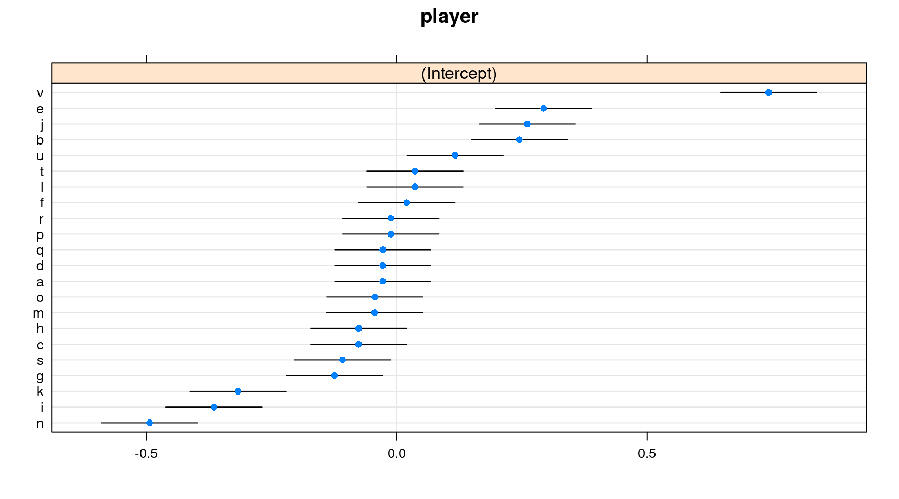
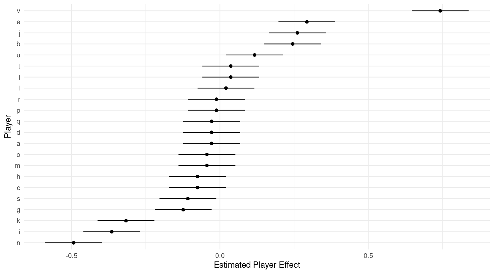
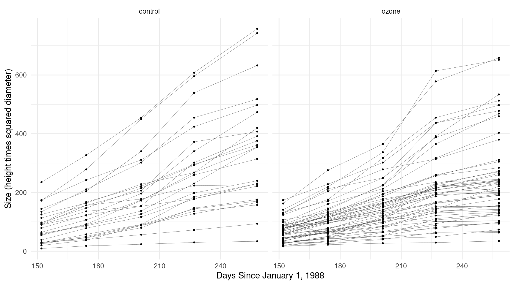
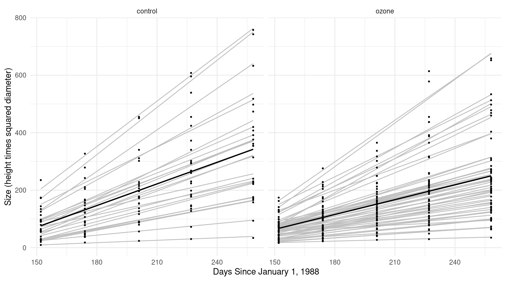
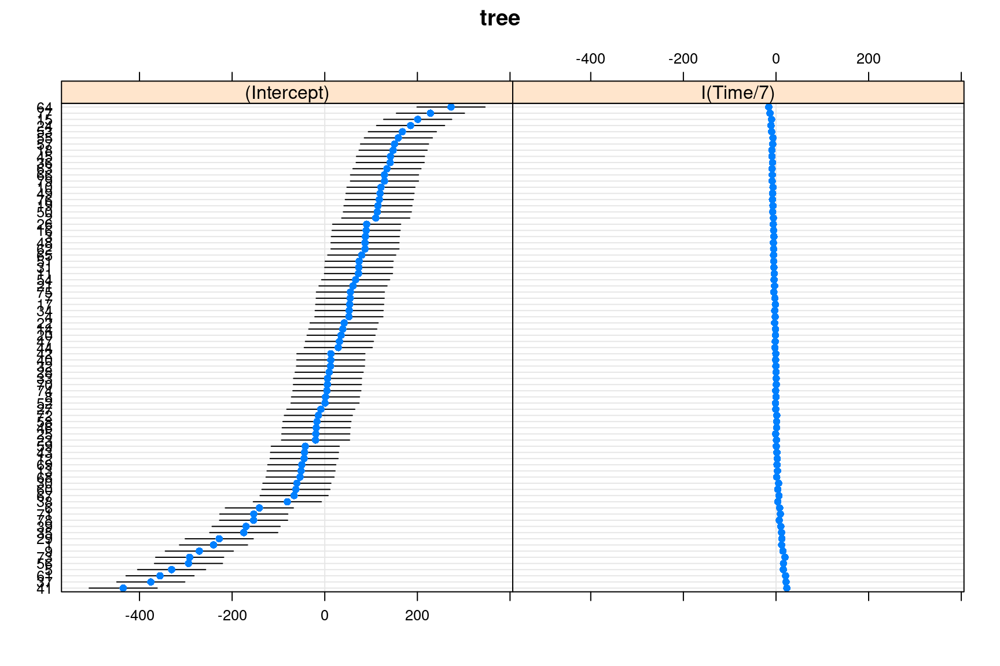
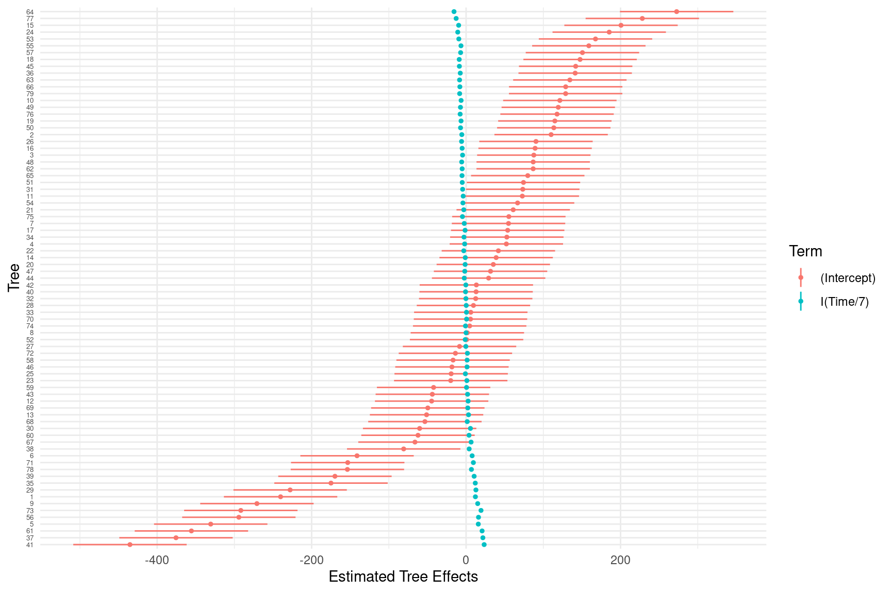
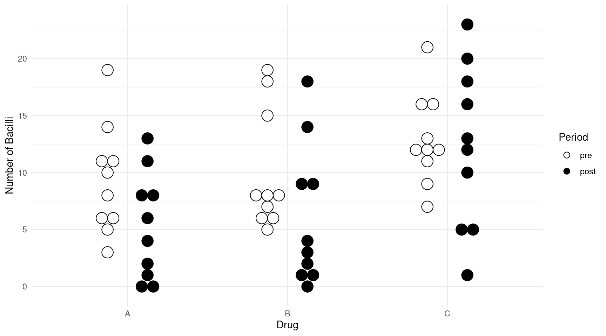

Wednesday, Apr 27
You can also download a PDF copy of this lecture.
Random Effects Approach
The random effects approach conceptualizes the parameters associated with the levels of the many-leveled factor as random variables. Another way to think of this is that the levels of that factor are a sample of levels from a real or conceptual population of levels.
Note: We sometimes use the term “mixed effects” model for a model where some parameters are modeled as random and some that are not modeled as random (i.e., fixed). Most (but not all) models with random effects also have some fixed effects, and are thus mixed effects models.
Example: Consider again the baserun
data, but a system of subscripts that distinguishes between the
player and the observation within each player so that
\(Y_{ij}\) is the \(j\)-th observation of running time for the
\(i\)-th player.
library(trtools)
head(baserun) round narrow wide
1 5.40 5.50 5.55
2 5.85 5.70 5.75
3 5.20 5.60 5.50
4 5.55 5.50 5.40
5 5.90 5.85 5.70
6 5.45 5.55 5.60If we were to ignore the effect of player we could write a model for these data as \[ E(Y_{ij}) = \beta_0 + \beta_1 x_{ij1} + \beta_2 x_{ij2}, \] where \(x_{i1}\) and \(x_{i2}\) are indicator variables for two of the three routes.
In the fixed effects approach we include an indicator variable for each player, so the model would become \[ E(Y_{ij}) = \beta_0 + \beta_1 x_{ij1} + \beta_2 x_{ij2} + \beta_3 x_{ij3} + \beta_4 x_{ij4} + \cdots + \beta_{23} x_{ij23}, \] where \(x_{ij3}, x_{ij4}, \dots, x_{ij23}\) are the 21 indicator variables for the 22 players.
In the random effects approach we would view \(\beta_3, \beta_4, \dots, \beta_{23}\) as random variables. To distinguish the random from the non-random (fixed) parameters I will change the symbols for the indicator variables and the parameters corresponding to the players and write the model as \[ E(Y_{ij}) = \beta_0 + \beta_1 x_{ij1} + \beta_2 x_{ij2} + \delta_1 z_{ij1} + \delta_2 z_{ij2} + \dots + \delta_{22} z_{ij22}. \] Note also that here we have 22 rather than 21 indicator variables (each player has their own parameter). A more compact way to write this model is \[ E(Y_{ij}) = \beta_0 + \beta_1 x_{ij1} + \beta_2 x_{ij2} + \underbrace{\delta_1 z_{ij1} + \delta_2 z_{ij2} + \dots + \delta_{22} z_{ij22}}_{\delta_i} = \beta_0 + \beta_1 x_{ij1} + \beta_2 x_{ij2} + \delta_i, \] so that \(\delta_i\) represents the “random effect” of the \(i\)-th player.
Another way to write this model is \[ Y_{ij} = \beta_0 + \beta_1 x_{ij1} + \beta_2 x_{ij2} + \delta_i + \epsilon_{ij}, \] where \(\epsilon_{ij}\) is the usual random error term, which is implicitly assumed to be normally-distributed. Thus on the right-hand side of the above expression we have two random variables on the right-hand side: \(\delta_i\) and \(\epsilon_{ij}\).
To complete the model a distribution is needed to be assumed for each \(\delta_i\). Typically they are assumed to be normally distributed with zero mean and some variance \(\sigma_{\delta}^2\) so that we write \(\delta_i \sim N(0,\sigma_{\delta}^2)\). Because the \(\delta_i\) have a mean of zero they can be viewed as a “deviation” of the effect of the \(i\)-th player from a (conceptual) average player.
The presence of the random \(\delta_i\) parameters fundamentally changes
the likelihood function. Specialized inferential methods are (usually)
necessary to arrive at correct inferences when random effects are
specified. As with other approaches functions to implement these methods
require that the data be in “long form” so we reshape the
baserun data.
library(dplyr)
library(tidyr)
baselong <- trtools::baserun %>% mutate(player = factor(letters[1:n()])) %>%
pivot_longer(cols = c(round, narrow, wide), names_to = "route", values_to = "time")
head(baselong)# A tibble: 6 × 3
player route time
<fct> <chr> <dbl>
1 a round 5.4
2 a narrow 5.5
3 a wide 5.55
4 b round 5.85
5 b narrow 5.7
6 b wide 5.75The lmer function from the lme4 package
can estimate a linear mixed effects regression model with
normally-distributed random effects. The model above can be estimated as
follows.
library(lme4)
m <- lmer(time ~ route + (1 | player), data = baselong)
summary(m)Linear mixed model fit by REML ['lmerMod']
Formula: time ~ route + (1 | player)
Data: baselong
REML criterion at convergence: -51.4
Scaled residuals:
Min 1Q Median 3Q Max
-3.0968 -0.3473 0.0031 0.5001 1.6424
Random effects:
Groups Name Variance Std.Dev.
player (Intercept) 0.06448 0.2539
Residual 0.00745 0.0863
Number of obs: 66, groups: player, 22
Fixed effects:
Estimate Std. Error t value
(Intercept) 5.53409 0.05718 96.78
routeround 0.00909 0.02603 0.35
routewide -0.07500 0.02603 -2.88
Correlation of Fixed Effects:
(Intr) rotrnd
routeround -0.228
routewide -0.228 0.500Profile likelihood confidence intervals for \(\sigma_{\delta}^2\) (the variance of the
\(\delta_i\) parameters), \(\sigma^2\) (the variance of \(\epsilon_{ij}\)), and \(\beta_0\), \(\beta_1\), and \(\beta_2\) can be obtained using
confint.
confint(m) 2.5 % 97.5 %
.sig01 0.18688 0.34746
.sigma 0.06937 0.10557
(Intercept) 5.42025 5.64793
routeround -0.04186 0.06004
routewide -0.12595 -0.02405Using lincon will produce Wald confidence intervals for
\(\beta_0\), \(\beta_1\), and \(\beta_2\).
trtools::lincon(m) estimate se lower upper tvalue df pvalue
(Intercept) 5.534091 0.05718 5.42202 5.64616 96.7838 Inf 0.000000
routeround 0.009091 0.02603 -0.04192 0.06010 0.3493 Inf 0.726871
routewide -0.075000 0.02603 -0.12601 -0.02399 -2.8817 Inf 0.003956Other inferences can be made using trtools::contrast and
the emmeans package, but note that player is never
specified when using these functions. These tools provide inferences
only for the “fixed effects” of the model. We can estimate the expected
running time for each route.
library(emmeans)
emmeans(m, ~route) route emmean SE df lower.CL upper.CL
narrow 5.53 0.0572 24.2 5.42 5.65
round 5.54 0.0572 24.2 5.42 5.66
wide 5.46 0.0572 24.2 5.34 5.58
Degrees-of-freedom method: kenward-roger
Confidence level used: 0.95 trtools::contrast(m, a = list(route = c("narrow","round","wide")),
cnames = c("narrow","round","wide")) estimate se lower upper tvalue df pvalue
narrow 5.534 0.05718 5.422 5.646 96.78 Inf 0
round 5.543 0.05718 5.431 5.655 96.94 Inf 0
wide 5.459 0.05718 5.347 5.571 95.47 Inf 0Notice that emmeans uses the “Kenward-Roger” method of
computing approximate degrees of freedom. The issue of degrees of
freedom is a difficult problem in models with random effects. Some
statisticians suggest just using Wald methods which specify infinite
degrees of freedom as an approximation (which is the default in my
functions). This can be done using the
lmer.df = "asymptotic" option.
emmeans(m, ~route, lmer.df = "asymptotic") route emmean SE df asymp.LCL asymp.UCL
narrow 5.53 0.0572 Inf 5.42 5.65
round 5.54 0.0572 Inf 5.43 5.66
wide 5.46 0.0572 Inf 5.35 5.57
Degrees-of-freedom method: asymptotic
Confidence level used: 0.95 We can also compare the routes as before.
pairs(emmeans(m, ~ route, lmer.df = "asymptotic"), adjust = "none", infer = TRUE) contrast estimate SE df asymp.LCL asymp.UCL z.ratio p.value
narrow - round -0.00909 0.026 Inf -0.0601 0.0419 -0.349 0.7269
narrow - wide 0.07500 0.026 Inf 0.0240 0.1260 2.882 0.0040
round - wide 0.08409 0.026 Inf 0.0331 0.1351 3.231 0.0012
Degrees-of-freedom method: asymptotic
Confidence level used: 0.95 trtools::contrast(m, a = list(route = c("narrow","round","wide")),
cnames = c("narrow","round","wide")) estimate se lower upper tvalue df pvalue
narrow 5.534 0.05718 5.422 5.646 96.78 Inf 0
round 5.543 0.05718 5.431 5.655 96.94 Inf 0
wide 5.459 0.05718 5.347 5.571 95.47 Inf 0trtools::contrast(m,
a = list(route = c("narrow","narrow","round")),
b = list(route = c("round","wide","wide")),
cnames = c("narrow - round","narrow - wide","round - wide")) estimate se lower upper tvalue df pvalue
narrow - round -0.009091 0.02603 -0.06010 0.04192 -0.3493 Inf 0.726871
narrow - wide 0.075000 0.02603 0.02399 0.12601 2.8817 Inf 0.003956
round - wide 0.084091 0.02603 0.03308 0.13510 3.2309 Inf 0.001234Some built-in functions also allow us to plot estimates of the \(\delta_i\) parameters.
lattice::dotplot(ranef(m, condVar = TRUE))$player
Alternatively you can use the ranef function to return
these estimates and plot them using ggplot or something
else.
d <- as.data.frame(ranef(m))
head(d) grpvar term grp condval condsd
1 player (Intercept) a -0.02772 0.0489
2 player (Intercept) b 0.24510 0.0489
3 player (Intercept) c -0.07587 0.0489
4 player (Intercept) d -0.02772 0.0489
5 player (Intercept) e 0.29325 0.0489
6 player (Intercept) f 0.02043 0.0489d <- d %>% mutate(lower = condval - 1.96 * condsd, upper = condval + 1.96 * condsd)
head(d) grpvar term grp condval condsd lower upper
1 player (Intercept) a -0.02772 0.0489 -0.12357 0.06813
2 player (Intercept) b 0.24510 0.0489 0.14925 0.34096
3 player (Intercept) c -0.07587 0.0489 -0.17172 0.01999
4 player (Intercept) d -0.02772 0.0489 -0.12357 0.06813
5 player (Intercept) e 0.29325 0.0489 0.19740 0.38910
6 player (Intercept) f 0.02043 0.0489 -0.07543 0.11628p <- ggplot(d, aes(x = grp, y = condval)) +
geom_linerange(aes(ymin = lower, ymax = upper)) +
geom_point(size = 1.5) +
theme_minimal() + coord_flip() +
labs(x = "Player", y = "Estimated Player Effect")
plot(p)
Example: Now consider again the Sitka
data.
library(MASS)
head(Sitka, 10) size Time tree treat
1 4.51 152 1 ozone
2 4.98 174 1 ozone
3 5.41 201 1 ozone
4 5.90 227 1 ozone
5 6.15 258 1 ozone
6 4.24 152 2 ozone
7 4.20 174 2 ozone
8 4.68 201 2 ozone
9 4.92 227 2 ozone
10 4.96 258 2 ozonep <- ggplot(Sitka, aes(x = Time, y = exp(size))) +
geom_line(aes(group = tree), alpha = 0.75, size = 0.1) +
facet_wrap(~ treat) + geom_point(size = 0.5) +
labs(y = "Size (height times squared diameter)",
x = "Days Since January 1, 1988") + theme_minimal()
plot(p) First let’s consider the model
\[ E(Y_{ij}) = \beta_0 + \beta_1 x_{ij1} + \beta_2 x_{ij2} + \beta_3 x_{ij3} + \delta_i, \] where \(Y_{ij}\) is the \(j\)-th observation of size for the \(i\)-th tree, \(x_{ij1}\) is an indicator for treatment (ozone), \(x_{ij2}\) is time, and \(x_{ij3} = x_{ij1}x_{ij2}\).
m <- lmer(exp(size) ~ treat * Time + (1 | tree), data = Sitka)
summary(m)Linear mixed model fit by REML ['lmerMod']
Formula: exp(size) ~ treat * Time + (1 | tree)
Data: Sitka
REML criterion at convergence: 4472
Scaled residuals:
Min 1Q Median 3Q Max
-2.811 -0.436 -0.027 0.350 3.620
Random effects:
Groups Name Variance Std.Dev.
tree (Intercept) 8827 94.0
Residual 2857 53.5
Number of obs: 395, groups: tree, 79
Fixed effects:
Estimate Std. Error t value
(Intercept) -305.123 32.256 -9.46
treatozone 110.675 39.014 2.84
Time 2.509 0.127 19.70
treatozone:Time -0.788 0.154 -5.12
Correlation of Fixed Effects:
(Intr) tretzn Time
treatozone -0.827
Time -0.799 0.661
treatozn:Tm 0.661 -0.799 -0.827Sitka$yhat.sub <- predict(m) # for each tree (with deltas)
Sitka$yhat.avg <- predict(m, re.form = NA) # for the "average" tree (deltas = 0)
p <- ggplot(Sitka, aes(x = Time, y = exp(size))) +
labs(y = "Size (height times squared diameter)",
x = "Days Since January 1, 1988") +
theme_minimal() + facet_wrap(~treat) +
geom_line(aes(y = yhat.sub, group = tree), color = grey(0.75)) +
geom_line(aes(y = yhat.avg), size = 0.75) +
geom_point(size = 0.5)
plot(p) This doesn’t really capture differences in the growth rates between
trees (i.e., an interaction between tree and time). Such a
model could be written as \[
E(Y_{ij}) = \beta_0 + \beta_1 x_{ij1} + \beta_2 x_{ij2} + \beta_3
x_{ij3} + \delta_i + \gamma_i x_{ij2},
\] where now there are two random parameters for each
tree: \(\delta_i\) and \(\gamma_i\). We can also write this model as
\[
E(Y_{ij}) =
\begin{cases}
\beta_0 + \delta_i + (\beta_2 + \gamma_i)t_{ij}, & \text{if the
treatment is control}, \\
\beta_0 + \beta_1 + \delta_i + (\beta_2 + \beta_3 + \gamma_i)t_{ij},
& \text{if the treatment is ozone},
\end{cases}
\] where \(t_{ij}\) is time.
This means that the linear relationship between time and expected size
varies over treatment conditions, but also trees — i.e., each tree has
its own intercept and slope (rate).
This doesn’t really capture differences in the growth rates between
trees (i.e., an interaction between tree and time). Such a
model could be written as \[
E(Y_{ij}) = \beta_0 + \beta_1 x_{ij1} + \beta_2 x_{ij2} + \beta_3
x_{ij3} + \delta_i + \gamma_i x_{ij2},
\] where now there are two random parameters for each
tree: \(\delta_i\) and \(\gamma_i\). We can also write this model as
\[
E(Y_{ij}) =
\begin{cases}
\beta_0 + \delta_i + (\beta_2 + \gamma_i)t_{ij}, & \text{if the
treatment is control}, \\
\beta_0 + \beta_1 + \delta_i + (\beta_2 + \beta_3 + \gamma_i)t_{ij},
& \text{if the treatment is ozone},
\end{cases}
\] where \(t_{ij}\) is time.
This means that the linear relationship between time and expected size
varies over treatment conditions, but also trees — i.e., each tree has
its own intercept and slope (rate).
m <- lmer(exp(size) ~ treat * Time + (1 + Time | tree), data = Sitka)Warning in checkConv(attr(opt, "derivs"), opt$par, ctrl = control$checkConv, : Model
failed to converge with max|grad| = 2.20761 (tol = 0.002, component 1)Warning in checkConv(attr(opt, "derivs"), opt$par, ctrl = control$checkConv, : Model is nearly unidentifiable: very large eigenvalue
- Rescale variables?Oh no! Models with random effects are cranky. But let’s take the advice of the warning and re-scale time from days to weeks.
m <- lmer(exp(size) ~ treat * I(Time/7) + (1 + I(Time/7) | tree), data = Sitka)Warning in checkConv(attr(opt, "derivs"), opt$par, ctrl = control$checkConv, : Model
failed to converge with max|grad| = 0.0418627 (tol = 0.002, component 1)That probably is not a problem. I suspect it is due to the very high correlation between the random intercept and slope parameters. But changing the optimizer seems to avoid the error.
library(optimx)
m <- lmer(exp(size) ~ treat * I(Time/7) + (1 + I(Time/7) | tree), data = Sitka,
control = lmerControl(optimizer = "optimx", optCtrl = list(method = "nlminb")))
summary(m) Linear mixed model fit by REML ['lmerMod']
Formula: exp(size) ~ treat * I(Time/7) + (1 + I(Time/7) | tree)
Data: Sitka
Control: lmerControl(optimizer = "optimx", optCtrl = list(method = "nlminb"))
REML criterion at convergence: 3915
Scaled residuals:
Min 1Q Median 3Q Max
-2.964 -0.395 -0.049 0.391 4.816
Random effects:
Groups Name Variance Std.Dev. Corr
tree (Intercept) 22745.6 150.82
I(Time/7) 70.2 8.38 -0.99
Residual 383.2 19.57
Number of obs: 395, groups: tree, 79
Fixed effects:
Estimate Std. Error t value
(Intercept) -305.12 31.65 -9.64
treatozone 110.68 38.29 2.89
I(Time/7) 17.56 1.71 10.29
treatozone:I(Time/7) -5.52 2.06 -2.67
Correlation of Fixed Effects:
(Intr) tretzn I(T/7)
treatozone -0.827
I(Time/7) -0.980 0.810
trtz:I(T/7) 0.810 -0.980 -0.827I found that you get more or less the same result even without changing the optimizer. Here’s a plot.
Sitka$yhat.sub <- predict(m) # for each tree (with deltas)
Sitka$yhat.avg <- predict(m, re.form = NA) # for the "average" tree (deltas = 0)
p <- ggplot(Sitka, aes(x = Time, y = exp(size))) +
labs(y = "Size (height times squared diameter)",
x = "Days Since January 1, 1988") +
theme_minimal() + facet_wrap(~treat) +
geom_line(aes(y = yhat.sub, group = tree), color = grey(0.75)) +
geom_line(aes(y = yhat.avg), size = 0.75) +
geom_point(size = 0.5)
plot(p)
Now we can estimate and compare the (average) growth rates in the
control and ozone conditions (per 100 days with contrast
and per day with emtrends).
trtools::contrast(m,
a = list(Time = 250, treat = c("control","ozone")),
b = list(Time = 150, treat = c("control","ozone")),
cnames = c("control","ozone")) estimate se lower upper tvalue df pvalue
control 250.9 24.38 203.1 298.7 10.29 Inf 7.718e-25
ozone 172.1 16.59 139.6 204.6 10.37 Inf 3.227e-25trtools::contrast(m,
a = list(Time = 250, treat = "control"),
b = list(Time = 150, treat = "control"),
u = list(Time = 250, treat = "ozone"),
v = list(Time = 150, treat = "ozone")) estimate se lower upper tvalue df pvalue
78.81 29.49 21 136.6 2.672 Inf 0.007537emtrends(m, ~ treat, var = "Time", lmer.df = "asymptotic") treat Time.trend SE df asymp.LCL asymp.UCL
control 2.51 0.244 Inf 2.03 2.99
ozone 1.72 0.166 Inf 1.40 2.05
Degrees-of-freedom method: asymptotic
Confidence level used: 0.95 pairs(emtrends(m, ~ treat, var = "Time",
lmer.df = "asymptotic"), infer = TRUE) contrast estimate SE df asymp.LCL asymp.UCL z.ratio p.value
control - ozone 0.788 0.295 Inf 0.21 1.37 2.672 0.0075
Degrees-of-freedom method: asymptotic
Confidence level used: 0.95 We can plot estimates of the \(\delta_i\) and \(\gamma_i\) parameters for each tree.
lattice::dotplot(ranef(m, condVar = TRUE))$tree
d <- as.data.frame(ranef(m))
head(d) grpvar term grp condval condsd
1 tree (Intercept) 1 -240.18 37.45
2 tree (Intercept) 2 110.08 37.45
3 tree (Intercept) 3 87.68 37.45
4 tree (Intercept) 4 52.13 37.45
5 tree (Intercept) 5 -330.64 37.45
6 tree (Intercept) 6 -141.21 37.45d <- d %>% mutate(lower = condval - 1.96 * condsd, upper = condval + 1.96 * condsd)
head(d) grpvar term grp condval condsd lower upper
1 tree (Intercept) 1 -240.18 37.45 -313.59 -166.8
2 tree (Intercept) 2 110.08 37.45 36.67 183.5
3 tree (Intercept) 3 87.68 37.45 14.27 161.1
4 tree (Intercept) 4 52.13 37.45 -21.28 125.5
5 tree (Intercept) 5 -330.64 37.45 -404.05 -257.2
6 tree (Intercept) 6 -141.21 37.45 -214.62 -67.8p <- ggplot(d, aes(x = grp, y = condval, color = term)) +
geom_linerange(aes(ymin = lower, ymax = upper)) +
geom_point(size = 1) +
theme_minimal() + coord_flip() +
labs(x = "Tree", y = "Estimated Tree Effects", color = "Term") +
theme(axis.text.y = element_text(size = 5))
plot(p)
Example: Consider again the smoking cessation meta analysis data.
library(dplyr)
library(tidyr)
quitsmoke <- HSAUR3::smoking
quitsmoke$study <- rownames(quitsmoke)
quitsmoke.quits <- quitsmoke %>% dplyr::select(study, qt, qc) %>%
rename(gum = qt, control = qc) %>%
gather(gum, control, key = treatment, value = quit)
quitsmoke.total <- quitsmoke %>% dplyr::select(study, tt, tc) %>%
rename(gum = tt, control = tc) %>%
gather(gum, control, key = treatment, value = total)
quitsmoke <- full_join(quitsmoke.quits, quitsmoke.total) %>%
mutate(study = factor(study)) %>% arrange(study)
head(quitsmoke) study treatment quit total
1 Blondal89 gum 37 92
2 Blondal89 control 24 90
3 Campbell91 gum 21 107
4 Campbell91 control 21 105
5 Fagerstrom82 gum 30 50
6 Fagerstrom82 control 23 50We can introduce a random “study effect” into a logistic regression model to create a generalized linear mixed effects regression model. This would be written as \[ \log\left[\frac{E(Y_{ij})}{1 - E(Y_{ij})}\right] = \beta_0 + \beta_1 x_{ij} + \delta_i, \] where \(Y_{ij}\) is the \(j\)-th proportion of people quitting in the \(i\)-th study, and \(x_{ij}\) is an indicator variable for treatment (gum). This model can be estimated as follows.
m <- glmer(cbind(quit, total - quit) ~ treatment + (1 | study),
family = binomial, data = quitsmoke)
summary(m)Generalized linear mixed model fit by maximum likelihood (Laplace Approximation) [glmerMod
]
Family: binomial ( logit )
Formula: cbind(quit, total - quit) ~ treatment + (1 | study)
Data: quitsmoke
AIC BIC logLik deviance df.resid
367.3 373.2 -180.6 361.3 49
Scaled residuals:
Min 1Q Median 3Q Max
-1.9940 -0.6602 -0.0373 0.4633 2.3042
Random effects:
Groups Name Variance Std.Dev.
study (Intercept) 0.412 0.642
Number of obs: 52, groups: study, 26
Fixed effects:
Estimate Std. Error z value Pr(>|z|)
(Intercept) -1.3625 0.1376 -9.90 < 2e-16 ***
treatmentgum 0.5149 0.0655 7.87 3.6e-15 ***
---
Signif. codes: 0 '***' 0.001 '**' 0.01 '*' 0.05 '.' 0.1 ' ' 1
Correlation of Fixed Effects:
(Intr)
treatmentgm -0.281We can estimate the odds ratio for the treatment, which is assumed to be the same for every study in this model.
trtools::contrast(m, tf = exp,
a = list(treatment = "gum"),
b = list(treatment = "control")) estimate lower upper
1.673 1.472 1.902pairs(emmeans(m, ~ treatment, type = "response"), reverse = TRUE) contrast odds.ratio SE df null z.ratio p.value
gum / control 1.67 0.11 Inf 1 7.867 <.0001
Tests are performed on the log odds ratio scale We can extend the model so that the treatment effect varies over studies (i.e., an interaction between treatment and study).
m <- glmer(cbind(quit, total - quit) ~ treatment + (1 + treatment | study),
family = binomial, data = quitsmoke)
summary(m)Generalized linear mixed model fit by maximum likelihood (Laplace Approximation) [glmerMod
]
Family: binomial ( logit )
Formula: cbind(quit, total - quit) ~ treatment + (1 + treatment | study)
Data: quitsmoke
AIC BIC logLik deviance df.resid
368.3 378.0 -179.1 358.3 47
Scaled residuals:
Min 1Q Median 3Q Max
-1.4423 -0.4678 0.0217 0.3796 1.6638
Random effects:
Groups Name Variance Std.Dev. Corr
study (Intercept) 0.4211 0.649
treatmentgum 0.0508 0.225 -0.12
Number of obs: 52, groups: study, 26
Fixed effects:
Estimate Std. Error z value Pr(>|z|)
(Intercept) -1.3991 0.1415 -9.89 < 2e-16 ***
treatmentgum 0.5723 0.0887 6.45 1.1e-10 ***
---
Signif. codes: 0 '***' 0.001 '**' 0.01 '*' 0.05 '.' 0.1 ' ' 1
Correlation of Fixed Effects:
(Intr)
treatmentgm -0.340Now our odds ratios are for a “typical” study.
trtools::contrast(m, tf = exp,
a = list(treatment = "gum"),
b = list(treatment = "control")) estimate lower upper
1.772 1.489 2.109pairs(emmeans(m, ~ treatment, type = "response"), reverse = TRUE) contrast odds.ratio SE df null z.ratio p.value
gum / control 1.77 0.157 Inf 1 6.449 <.0001
Tests are performed on the log odds ratio scale Note: In logistic regression, if your response variable is
binary (i.e., not aggregated counts) use the option
nAGQ = x where x is maybe 21+.
m <- glmer(cbind(quit, total - quit) ~ treatment + (1 | study),
family = binomial, data = quitsmoke, nAGQ = 31)
summary(m)Generalized linear mixed model fit by maximum likelihood (Adaptive Gauss-Hermite
Quadrature, nAGQ = 31) [glmerMod]
Family: binomial ( logit )
Formula: cbind(quit, total - quit) ~ treatment + (1 | study)
Data: quitsmoke
AIC BIC logLik deviance df.resid
136.2 142.0 -65.1 130.2 49
Scaled residuals:
Min 1Q Median 3Q Max
-1.9943 -0.6602 -0.0374 0.4631 2.3039
Random effects:
Groups Name Variance Std.Dev.
study (Intercept) 0.413 0.642
Number of obs: 52, groups: study, 26
Fixed effects:
Estimate Std. Error z value Pr(>|z|)
(Intercept) -1.3625 0.1378 -9.89 <2e-16 ***
treatmentgum 0.5149 0.0655 7.86 4e-15 ***
---
Signif. codes: 0 '***' 0.001 '**' 0.01 '*' 0.05 '.' 0.1 ' ' 1
Correlation of Fixed Effects:
(Intr)
treatmentgm -0.281It can also be used in other GLMERs. Because of the complexity of the likelihood function in these models, there are many different numerical approaches to estimation.
Example: Consider a random effects approach for the
leprosy data.
library(ALA)
head(leprosy) id drug period nBacilli
1 1 A pre 11
31 1 A post 6
2 2 B pre 6
32 2 B post 0
3 3 C pre 16
33 3 C post 13p <- ggplot(leprosy, aes(x = drug, y = nBacilli, fill = period)) +
geom_dotplot(binaxis = "y", method = "histodot",
stackdir = "center", binwidth = 1,
position = position_dodge(width = 0.5)) +
scale_fill_manual(values = c("white","black")) +
labs(x = "Drug", y = "Number of Bacilli", fill = "Period") +
theme_minimal()
plot(p)
m <- glmer(nBacilli ~ drug * period + (1 | id), family = poisson, data = leprosy)
summary(m)Generalized linear mixed model fit by maximum likelihood (Laplace Approximation) [glmerMod
]
Family: poisson ( log )
Formula: nBacilli ~ drug * period + (1 | id)
Data: leprosy
AIC BIC logLik deviance df.resid
363.9 378.6 -175.0 349.9 53
Scaled residuals:
Min 1Q Median 3Q Max
-1.8757 -0.5729 0.0637 0.4264 1.9372
Random effects:
Groups Name Variance Std.Dev.
id (Intercept) 0.259 0.509
Number of obs: 60, groups: id, 30
Fixed effects:
Estimate Std. Error z value Pr(>|z|)
(Intercept) 2.0936 0.1953 10.72 < 2e-16 ***
drugB 0.0506 0.2737 0.19 0.85320
drugC 0.3836 0.2682 1.43 0.15270
periodpost -0.5623 0.1704 -3.30 0.00097 ***
drugB:periodpost 0.0680 0.2344 0.29 0.77164
drugC:periodpost 0.5147 0.2114 2.43 0.01490 *
---
Signif. codes: 0 '***' 0.001 '**' 0.01 '*' 0.05 '.' 0.1 ' ' 1
Correlation of Fixed Effects:
(Intr) drugB drugC prdpst drgB:p
drugB -0.707
drugC -0.725 0.515
periodpost -0.317 0.226 0.231
drgB:prdpst 0.230 -0.317 -0.168 -0.727
drgC:prdpst 0.255 -0.182 -0.321 -0.806 0.586Estimated ratios for each drug.
pairs(emmeans(m, ~ period | drug, type = "response"),
reverse = TRUE, infer = TRUE)drug = A:
contrast ratio SE df asymp.LCL asymp.UCL null z.ratio p.value
post / pre 0.570 0.0971 Inf 0.408 0.796 1 -3.300 0.0010
drug = B:
contrast ratio SE df asymp.LCL asymp.UCL null z.ratio p.value
post / pre 0.610 0.0982 Inf 0.445 0.836 1 -3.071 0.0021
drug = C:
contrast ratio SE df asymp.LCL asymp.UCL null z.ratio p.value
post / pre 0.954 0.1193 Inf 0.746 1.218 1 -0.381 0.7035
Confidence level used: 0.95
Intervals are back-transformed from the log scale
Tests are performed on the log scale trtools::contrast(m, tf = exp,
a = list(period = "post", drug = c("A","B","C")),
b = list(period = "pre", drug = c("A","B","C")),
cnames = c("A","B","C")) estimate lower upper
A 0.5699 0.4081 0.7958
B 0.6100 0.4450 0.8362
C 0.9535 0.7461 1.2185We can also compare the rate ratios.
pairs(pairs(emmeans(m, ~ period | drug, type = "response"),
reverse = TRUE), by = NULL, adjust = "none") contrast ratio SE df null z.ratio p.value
(post / pre A) / (post / pre B) 0.934 0.219 Inf 1 -0.290 0.7716
(post / pre A) / (post / pre C) 0.598 0.126 Inf 1 -2.435 0.0149
(post / pre B) / (post / pre C) 0.640 0.130 Inf 1 -2.191 0.0284
Tests are performed on the log scale trtools::contrast(m, tf = exp,
a = list(period = "post", drug = "A"),
b = list(period = "pre", drug = "A"),
u = list(period = "post", drug = "B"),
v = list(period = "pre", drug = "B")) estimate lower upper
0.9342 0.5901 1.479trtools::contrast(m, tf = exp,
a = list(period = "post", drug = "A"),
b = list(period = "pre", drug = "A"),
u = list(period = "post", drug = "C"),
v = list(period = "pre", drug = "C")) estimate lower upper
0.5977 0.3949 0.9045trtools::contrast(m, tf = exp,
a = list(period = "post", drug = "B"),
b = list(period = "pre", drug = "B"),
u = list(period = "post", drug = "C"),
v = list(period = "pre", drug = "C")) estimate lower upper
0.6397 0.429 0.954